Water as a medium appears in PMMM more often than one might think. Water is associated with comprehension, "knowing" or otherwise having recieved clarity. This can be true for stationary water (a bowl, a drink) but also especially applies to moving water.
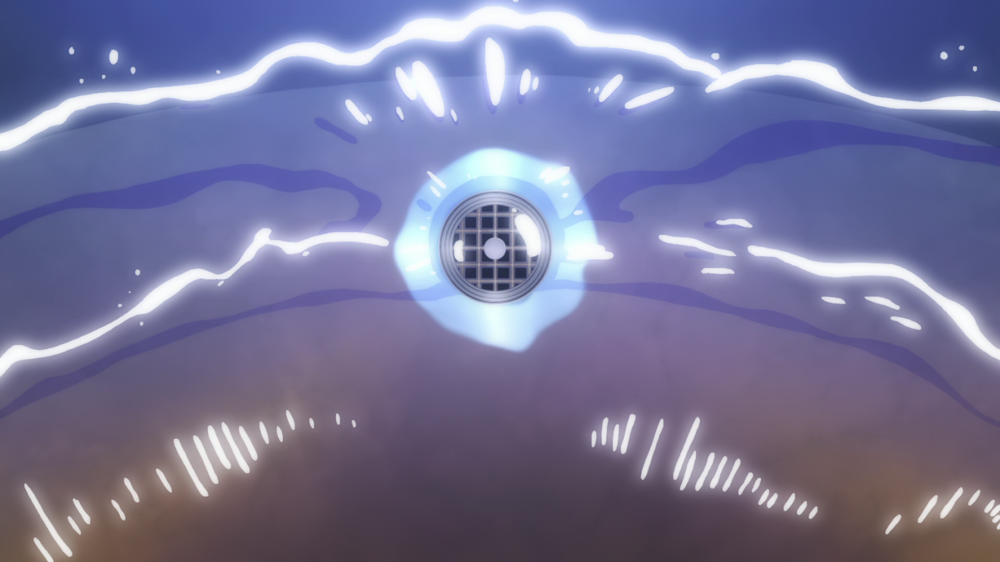
In the first episode, we see Madoka with her mother, Junko, prepping for their respective days. Madoka is washing her face and so is her mother.
In the repeat of the same scene in the Rebellion film, we have divergences already. Madoka cupping the water in her hand reveals a soul gem to the audience, the point driven further home with her acknowledging a mute Incubator bathing.
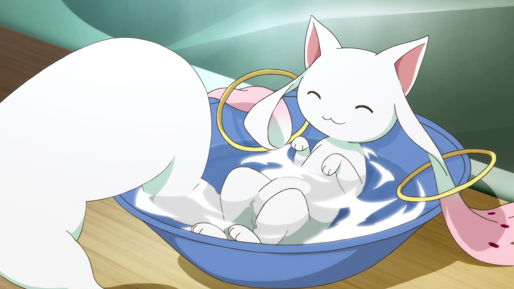
This demonstrates to the audience that the circumstances must be materially different; Madoka is already a magical girl.
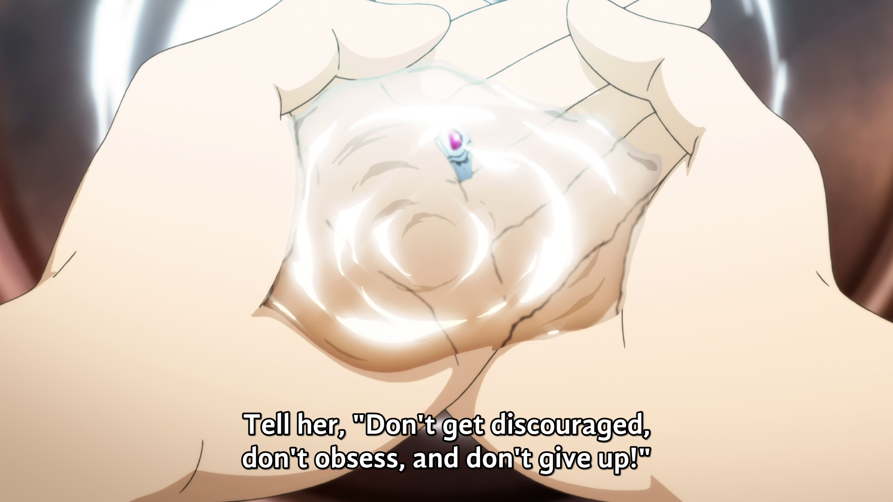
Building on top of this, Madoka's "splash" to her face also includes her soul gem; same as before, she is already a magical girl. This scene serves as understanding more about others in both circumstances; the show's discussion applied to Kazuko Saotome (Madoka's teacher), and the latter applies to Hitomi and Kyouske Kajimou's relationship. The audience happens to also learn a fair bit about an entirely different topic; both both are edified.
The first five minutes of Rebellion and the series are far from the only places we see running water.
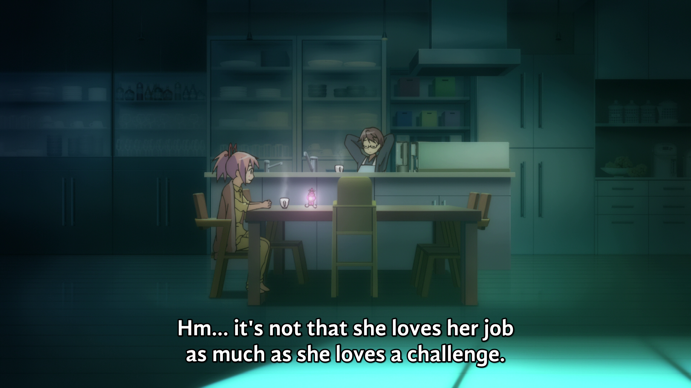
In Episode 3, while Madoka talks with her father about her mother, she learns about what type of woman she is, and what motivates her. This can be read as a lead-in to help better analyze Mami's death at the end of Episode 3.
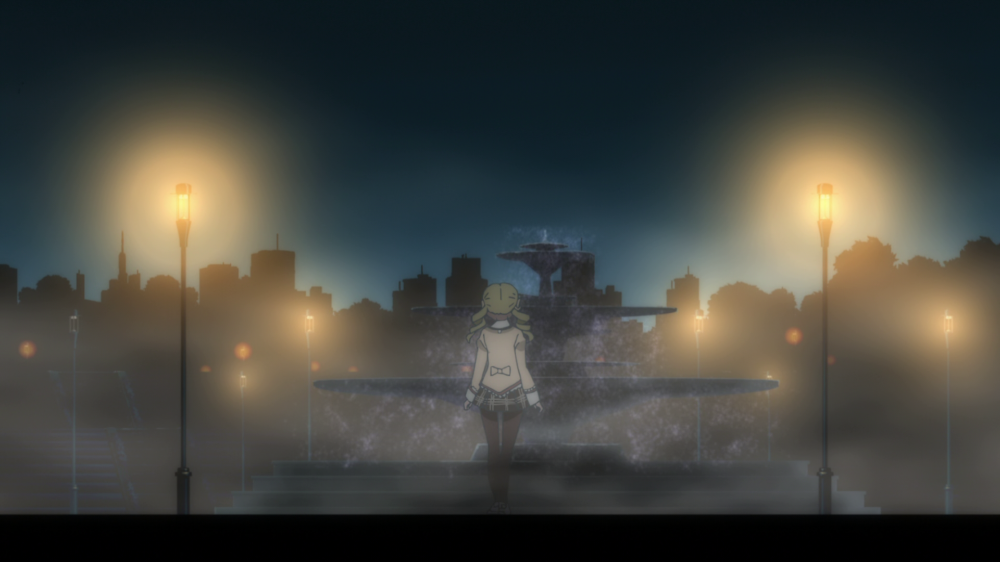
In that same episode, and right after that chat though, we see Mami and Homura talking about Homura's intentions with Madoka. Mami notes her potential, and Homura does a hairflip, the conversation revealing both of how they react.
However, most waterfountains tend to use recirculating systems for conservation reasons, meaning this too could be a cycle.
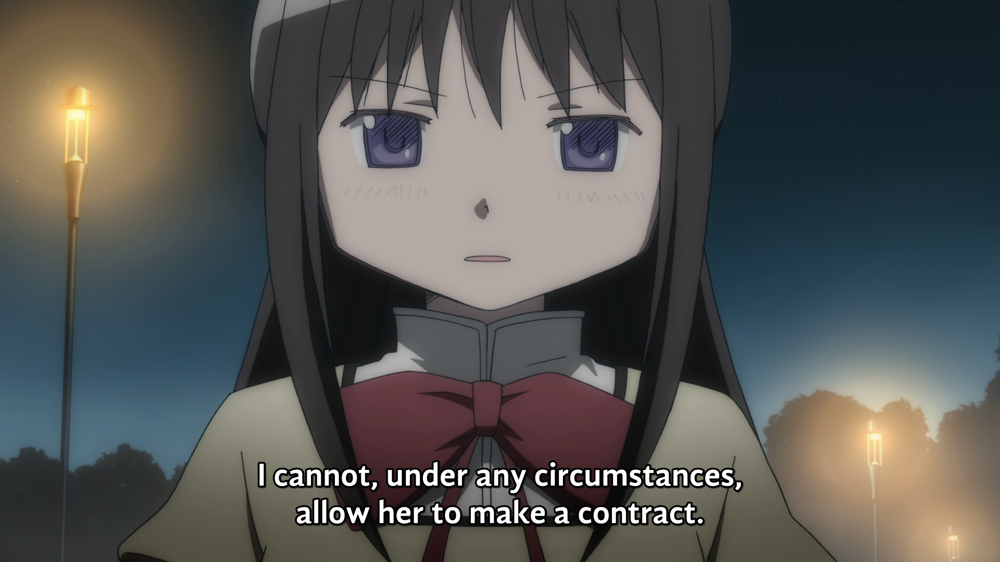
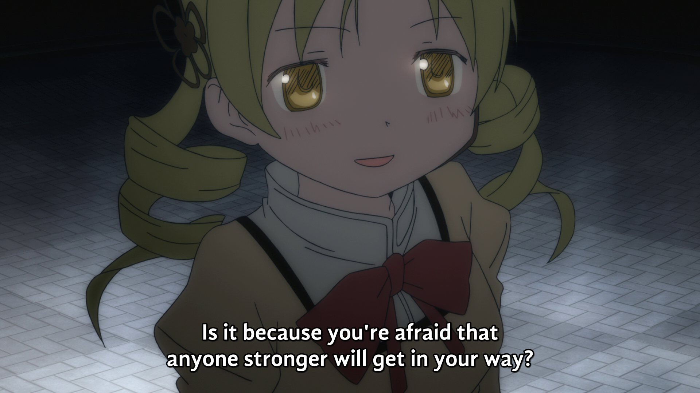
In Episode 4, as Madoka is coping with the death of Mami the night prior, she cries both at breakfast, and when she visits her apartment soon after.
Interestingly, still water (not flowing) is often associated with disease, death, and plague.
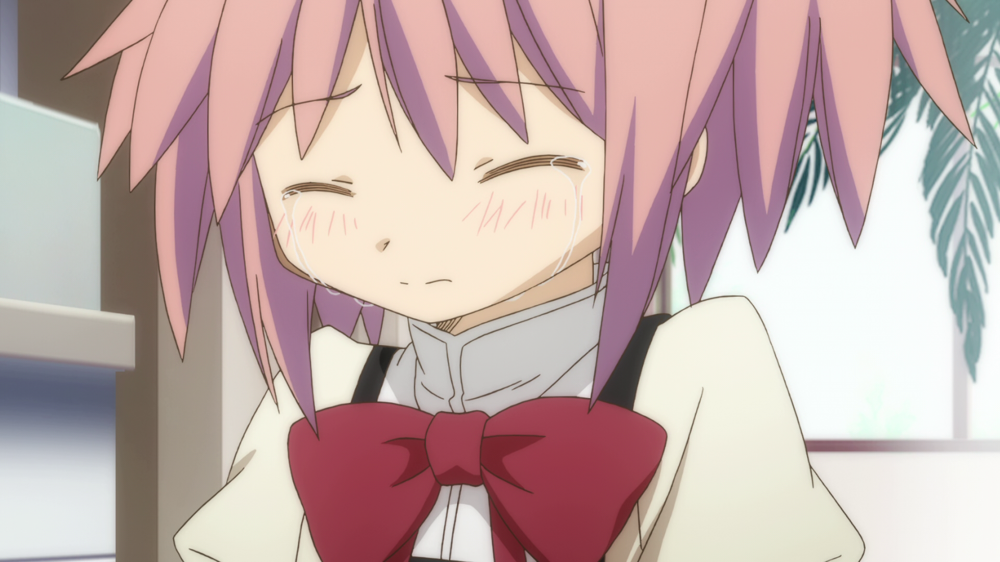
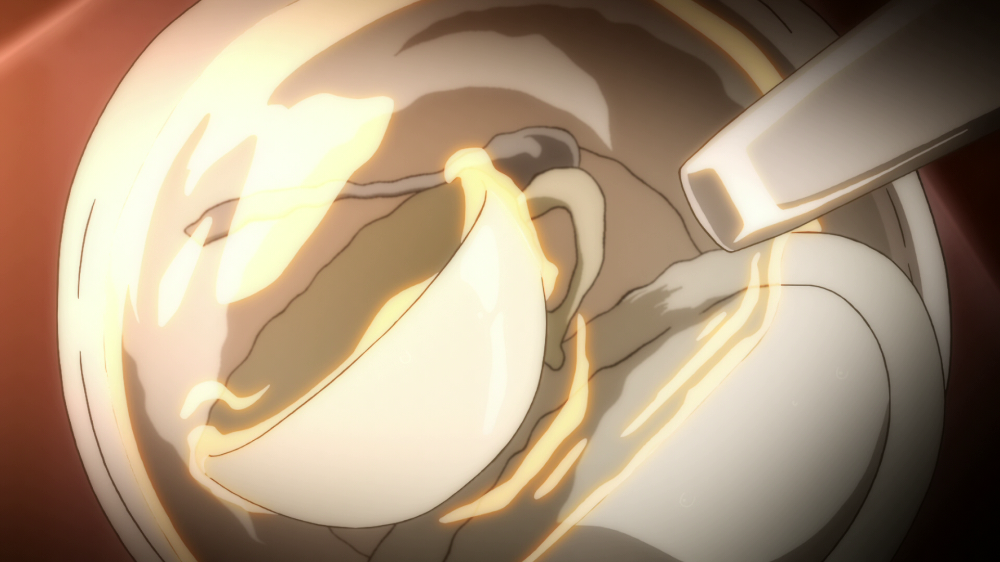
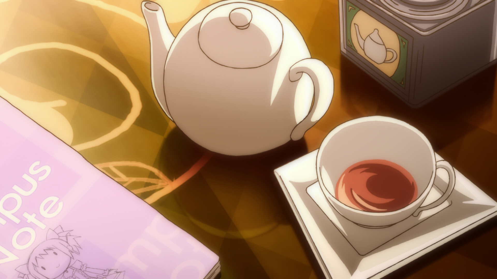
This even extends to the teacup that'll never be filled again.
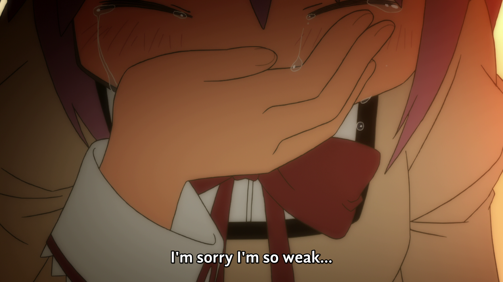